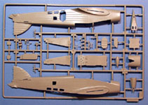
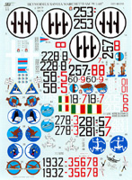
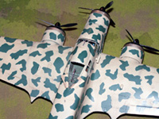
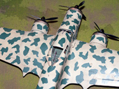

Trumpeter 1/48 Savoia-Marchetti SM.79-II Sparviero (Hawk)
Kit #2817
MSRP $50.00
Classic Airframes Savoi-Marchetti SM.79 Torpedo Bomber
Kit #462
MSRP $64.95
Images and text Copyright � 2006 by Matt Swan
Developmental Background
They called it that �Damned Hunchback� (due to the distinctive hump) but it was one of the most important Italian produced aircraft of World War Two. The aircraft�s prototype first appeared in 1934 and was constructed around a tubular steel framework with wood and fabric coverings and sported three 750 hp Alfa Romeo 125 RC.34 engines in the Regia Aeronautica's preferred tri-motor formula. The prototype set several records and won many races and was just beginning to show its capabilities.
Developed from a civilian airliner, the first SM.79s entered service in late 1936, just in time to fly combat over Spain with the Aviacion Legionaria. Internally the aircraft could carry 2750 pounds of bombs and in the case of the SM.79-II and SM.79-III could carry two torpedoes on racks mounted under the fuselage. This is the role that the type really showed its abilities. While the SM.79 had established itself as a rugged, reliable multi-role medium bomber it had been upgraded with the 1000 hp Piaggio P.XI RC.40 engines and were thought by many to be among the best land-based torpedo bombers of the war. During the summer of 1942 allied shipping connected with �Operation Pedestal� one carrier, two cruisers, a destroyer and nine merchant ships had been sunk, many of them credited to torpedo equipped SM.79-IIs.
The SM.79 served in the air forces of Brazil, Iraq, Yugoslavia, Romania and Spain, some right up to the end of the war. The units shipped to Brazil, Iraq and Romania were the SM.79B type with only two engines. The Romanians flew them on the Russian front from 1941 to 1944. The aircraft was flown with courage and skill by its crews. By time production ceased (a nine year run) approximately 1300 aircraft in three basic types had been manufactured. Considering the antiquated 1930�s design and type of construction this is a pretty amazing record.
The Trumpeter Kit
This kit arrives in a large corrugated cardboard box with great looking artwork. The box itself is of interest to collectors as it will hold up well in a large collection of unbuilt kits. Inside this box we have five large sprues of medium gray parts packaged in individual poly bags to prevent contact and damage during shipping. Also there is a medium sprue of clear parts. The clear parts consists of the �Hump� which is the main cockpit canopy, five side window panels, two lower fuselage panels, the lower gondola window and a landing light pane. All these pieces look good with good clarity and well defined frame lines. One thing that immediately caught my attention when handling these pieces was the heavy layer of mold release agent on the parts. Everything is actually slippery with the stuff and a good washing with hot soapy water will be required.
The gray pieces all display a combination of raised details and recessed panel lines that seems to do a reasonably good job of replicating the wood and fabric construction. There is very little flash on the parts and no evident sink marks. There are several large injector pin markings on several interior pieces that need to be cleaned up. Some of the worse ones are inside the engine cowlings and these must be shaved off smooth or you will have a very difficult time getting the cylinder banks into the nacelle. Speaking of the cylinder banks, each of the three engines is a thirteen piece assembly with separate cylinder head caps, push-rod assembly and gear reduction box. One thing that bothers me about the engine/propeller assembly is that there does not seem to be any provision to allow the propellers to spin. I�ve studied the directions quite intently and it sure looks like Trumpeter expects the modeler to glue the props in place. I�ll have to figure out a fix for this issue because if I can�t spin the propeller and make airplane noises I will not be happy.
Other areas of interest are the cockpit, with a seventeen piece assembly here it still seems somewhat empty. The dash is good and benefits from the addition of aftermarket instrument decals, the seats are basic and the sidewalls have minimal detailing. All of the defensive machine guns appear to be somewhat clunky in construction and may need to be replaced. The wings feature separate ailerons � these are shown in the instructions as inner and outer ailerons and I have to wonder if they are actually flaperons � some research work needed here. Also we have separate leading edge flaps and these can be modeled open or closed. Rudder and elevators are provided as separate pieces so some flavor can be added to the model�s appearance here. For a bomb load all we get are two torpedoes, they are reasonably nice but are missing some panel lines. The general part fit is pretty good and I do not see the need for large amounts of filler with this kit. Overall parts count we have 185 medium gray plastic pieces and ten clear parts for a total of 195 pieces in the box and it looks like you will use just about every one of them.

You may click on the small images above to view larger pictures
Trumpeter Decals and Instructions
Trumpeter certainly spared no effort on the instruction booklet. We get an A-4 sized booklet with stapled binding that begins with a nice black and white profile of the aircraft along with a complete paint chart for Gunze Mr. Color paints. Page two gives us a complete parts map followed by thirteen pages comprising twenty eight exploded view construction steps. Color call-outs are scattered throughout the instructions and the order of assembly is fairly logical.
 The last page of the booklet shows decal placement and exterior painting instructions. Odd thing is that the model shown in the instructions is not the model shown on the box art. The box art is a two tone upper surface and the instructions show a tricolor upper surface. Of all the painting codes given the only one with no paint code is the interior green and no instructions are given on how to mix this color. If you are not using Gunze Mr. Color paints then you will have to put some effort into cross-matching your colors. For that interior green I found a pretty close match with Model Master #4776 RLM 62 Grun.
The last page of the booklet shows decal placement and exterior painting instructions. Odd thing is that the model shown in the instructions is not the model shown on the box art. The box art is a two tone upper surface and the instructions show a tricolor upper surface. Of all the painting codes given the only one with no paint code is the interior green and no instructions are given on how to mix this color. If you are not using Gunze Mr. Color paints then you will have to put some effort into cross-matching your colors. For that interior green I found a pretty close match with Model Master #4776 RLM 62 Grun.
Decals provided with the kit are for one aircraft only. We have a small sheet that includes the basic National markings and unit number for a single aircraft. The decals show very good print registry, color density and image clarity. They appear to be nicely thin and will most likely behave well with your standard setting solutions.
The Classic Airframes Kit
This kit arrives in a slightly smaller box than the Trumpeter kit but is filled with plenty of modeling goodness. First we have a single large poly bag containing all the elements of the kit; we have five trees of plastic parts done in a slightly soft medium gray plastic that cover the primary elements of the model such as fuselage, wings and torpedo load. The sprue gates are somewhat large, especially on the fuselage pieces and some very minor flash can be found on some items. Panel lines while crisp and consistent have little tiny beads of plastic in them. Fortunately these break off with a single pass of the fingernail. The wing assembly comes as a five piece arrangement with control surfaces molded in neutral positions. Propellers come with individual blades and hubs with two options on the propeller spinners. Fabric texture along the fuselage and rudder seems to be well done. The large fuselage side windows are plated over and the main crew door is cast in place. I don�t find any sink marks but there are several large injector pins that will need to be removed. So far we have sixty four pieces done in this medium gray plastic.
In the past many Classic Airframes kits came with vacuformed canopies, not so here. This kit includes a small sprue of injection molded clear parts. There are eleven pieces here covering the main cockpit canopy and two windows over the radio room along with the seven small windows around the ventral gondola. No options are given to open the fuselage side windows and place clear pieces there. The clear parts display good clarity and well defined frame lines.
 In addition to these plastic pieces we also get a small fret of photo etched parts. On this fret is a really nice little set of steps for the crew door, some detail pieces for the torpedo and some amour plating for gun positions. What really sets this kit apart are the two bags full of resin goodies that we�ll look at next. This kit is full of options and we really start to see that here; we have three different options on exhaust stacks, all in resin with excellent detail, mass balancers, flight control hinges, engine carburetors, torpedo mounting hardware and best of all � a complete resin cockpit and radio room that extends to cover the upper gun position and into the crew compartment. We get resin guns for several different versions, bulged and flattened resin wheels and three nicely done resin engine faces. Resin pieces can be delicate, especially when dealing with very fine details. In my package I found only two small pieces that had been damaged in shipping and one gun barrel broken off the pour stub, all items very easily repaired � not too bad. Within these two bags of resin we have one hundred one detail pieces bringing the total kit parts count to two hundred four pieces and that takes into account thirty two photo etched parts.
In addition to these plastic pieces we also get a small fret of photo etched parts. On this fret is a really nice little set of steps for the crew door, some detail pieces for the torpedo and some amour plating for gun positions. What really sets this kit apart are the two bags full of resin goodies that we�ll look at next. This kit is full of options and we really start to see that here; we have three different options on exhaust stacks, all in resin with excellent detail, mass balancers, flight control hinges, engine carburetors, torpedo mounting hardware and best of all � a complete resin cockpit and radio room that extends to cover the upper gun position and into the crew compartment. We get resin guns for several different versions, bulged and flattened resin wheels and three nicely done resin engine faces. Resin pieces can be delicate, especially when dealing with very fine details. In my package I found only two small pieces that had been damaged in shipping and one gun barrel broken off the pour stub, all items very easily repaired � not too bad. Within these two bags of resin we have one hundred one detail pieces bringing the total kit parts count to two hundred four pieces and that takes into account thirty two photo etched parts.
A moment ago I mentioned that this kit is full of options and I need to talk about those for just a moment, not only can you build a basic SM.79 Torpedo Bomber here but you can open the crew door (yes, the kit includes a replacement door), you can open the top gun position and have a fully detailed interior looking back at you or you can remove the ventral gondola, swap the guns for those with flash suppressors and replace the exhaust with the provided �Wellington� style exhausts to model a SM.79bis or replace the prop spinners, change the exhausts to the elongated exhausts (included) and model the SM.79sil.
You may click on the small images above to view larger pictures.
Classic Airframes Instructions and Decals
Uncle Jules (Jules Bringuier � founder of Classic Airframes) did a really outstanding job on the instructions. They come as a small eight page booklet beginning with a brief background section on the aircraft. We get a complete parts map, construction key code and paint chart. Paints colors are provided by name only with no manufacture code numbers other than for the interior green. The remainder of the booklet consists of twenty five exploded view construction steps with color call-outs and building tips scattered throughout. There is also a four page addendum covering kit modifications for the sil and bis conversions. Next we have a six page booklet covering decal placement and various exterior paint schemes for nine different aircraft. Exterior paint scheme colors are provided by Federal Standard numbers and by color name. After looking over just this information I am tempted to purchase a few more of these so I can model more than one scheme � Jules, you devil.
Since we have painting instructions for nine different aircraft it just makes sense that we have a sheet of decals covering nine different aircraft. The graphics on this sheet are really sharp with great print registry and color density. Besides the basic markings we also have propeller logos included. Just in case you have not guessed, you may click on the small image to the right to view a larger scan of the decals. At least one aircraft scheme requires that the Italian logo be placed over a white background and while we do not have that background provided as a decal there is a full size template included with the instructions to mask and paint that area should you choose that scheme. I�ve used Classic Airframes decals in the past and have found them to be nicely thin and to react favorable with all standard setting solutions.
Conclusions
The Chinese government awarded Trumpeter with 15 million dollars to upgrade their facilities and become the premier model manufacture in the world and from the looks of it they are doing their best to achieve just that. We have seen a large number of new kits in both common scales coming out of their plant over the last few years and I�m glad for that. This kit has several good qualities to it like well engineered parts, clean molding with crisp details and great packaging. On the down side we have an excess of mold release agent that could cause issues for the unwary modeler, an interior that could use some more stuff to busy it up and a total lack of variety in aircraft markings. I guess this does create an opening for the aftermarket industry and they are not being slow to fill these gaps.
Classic Airframes, while not the physical size of Trumpeter has been producing kits to fill niches missed by main stream model manufactures for many years, almost all with resin details and many with PE details. The Classic Airframes kit definitely has a better level of detail than the Trumpeter kit but does not include items such as alignment pins which many new modelers could find as a hurdle. The CA kit will require more work in cleaning up and interior assembly but will result in a more accurate model with a more complete cockpit area. It does not have any interior framing in the cargo area as does the Trumpeter kit and this could be an issue when opening the crew door. The engines on the CA kit are superior to those on the Trumpeter kit as well. Overall the parts are well engineered and fit together fairly well. All panel lines seem to line up properly during test fitting but some trimming may need to be done for the cockpit and the engines.
Alpha Flight has already stepped up with a few little add-ons like two different torpedoes (remember where I commented on missing panel lines?), two different versions of night exhaust shrouds, a torpedo carrier and a set of replacement rear flight control surfaces. Cutting edge offers a wheel mask set, Parts Accessories has a nice PE detail set out, Tauro has a set of various bomber number decals and Eduard offers several detail enhancement sets including a much needed interior upgrade so that the upper cargo door can be opened to display all the cool stuff inside.
If you want to build a model of the SM.79 and not worry about what is or is not there for the interior and you want something relatively fast in the construction aspect then the Trumpeter kit may be best for you. If you are more concerned with overall accuracy of the model, a large choice of subjects and want to have no fear of the flashlight brigade then the Classic Airframes kit is what you want. Admittedly the Classic Airframes kit will require more work but the end result will most definitely be worth the effort.
Construction
1/8/06
As with most model construction things start with the interior. Finding a suitable paint for that Italian Interior green was the first hurdle to overcome. After locating a pint chip (no easy task there) for the correct color I started comparing this against various common modeling paints and finally settled on Model Master #4776 RLM 62 Grun as the best match. Once the entire model had been washed thoroughly with hot soapy water and dried the cockpit pieces and fuselage interior pieces were airbrushed RLM 62.
The dash was painted black then Mike Grant Instrument decals were added. I dug into the spares box and found several photo etched pieces to act as throttles and landing gear levers. These were superglued to the throttle quadrant. Some Lion Roar PE Luftwaffe seat belts were commandeered for the seats. Small details were brush painted and the parts were assembled.
The interior of the fuselage was washed with my basic sludge wash and allowed to dry. The tail wheel and strut were painted then assembled. Clear windows for the fuselage sides were masked with masking tape then installed using Testors Clear Parts Cement. Before installing the cockpit tub I gave this project considerable thought as to whether I wanted to spring for the Eduard interior set or just do an out-of-box build. I decided that with some of the other modeling commitments I had coming up that this would be done OOB and moved on. Maybe later I�ll build another one all opened up. The real challenge with this kit will be the exterior paint scheme.
1/15/06
Next I�ll break from the Trumpeter kit and work on the Classic Airframes interior. There is most definitely more work required here and it begins with removing the resin parts from the pour stubs then washing them in warm soapy water to remove any residual mold release agents. Unlike the Trumpeter kit there is no excess mold release agent visible to the naked eye. After the side walls had been removed from the pout stubs I found that not only did they have some warpage to them but the cockpit floor had a most definite bow to it. The dash also displayed some warpage so all these pieces went to the kitchen for some straightening out.
Staring with a good quality glass bowl I filled it with hot water then placed the bowl in the microwave and heated the water until it was at least 180 degrees Fahrenheit. Not the resin parts are dropped into the hot water. The thin sidewalls and dashboard can be removed after only a few moments (using tweezers of course) and pressed flat on the counter top until they cool which is very quickly. The thicker floor pan is allowed a few minutes to absorb as much heat as possible then pulled out and pressed flat. I had to do this about three times with the floor pan moving in small increments to avoid snapping the part and still I have a little bit of warpage which I will simply have to deal with. All pieces are dried off and painted RLM 62 interior green. Other detail colors are done with a brush and the dash is airbrushed flat black. The Classic Airframes kit does not include seat belts so just like with the Trumpeter kit I used some Lion Roar PE Luftwaffe seat belts. The CA dash has very faint instrument details so I opted to use the Mike Grant instrument decals here also. More Mike Grant decals were used on the radio panels in the aft section of the cockpit as well. Various control levers were cut from the PE fret and installed using medium superglue and accelerator.
Once all the pieces were painted they were installed on the floor pan beginning with the rudder pedals then the seats followed by the front bulkhead and right sidewall. I held the floor pan and sidewall into the fuselage half for correct placement before tacking the pieces with superglue and this was to compensate for the slight bow in the floor. I ended up with a small gap at both the front and rear ends of the sidewall that were filled with superglue and painted over � can�t even tell they were there. Next the left sidewall and aft bulkhead are placed followed by the aft walkway and upper gun position floor. The dash and throttle quadrant were assembled then placed into the cockpit assembly. Now the completed assembly gets a good coating of sludge wash and is allowed to dry. I think I spent two evenings of modeling working on the Trumpeter interior and nearly five evenings getting the Classic Airframes interior together. So what do you think? Was the extra three days worth it? You can click on those small images for a larger picture.
While the interior pieces were all drying I went to work on the engines and wings on the Trumpeter kit. The wings are easy, just gluing the two halves together and setting them aside. The engines are a little more complex, after painting them Model Master Burnt Iron Lacquer I found that the location stub on the push rod assembly was incorrect � this had to be removed and the piece glued in place with an eye out for proper alignment. All those little top caps for the cylinder heads were a joy to clean up and glue in place also and during this assembly it was discovered that Trumpeter seems to want us to glue the propellers in place. What kind of affront is this to plastic modeling??? I need to be able to spin my propeller sand make those silly little airplane noises that make my cat look at me like I�ve lost my mind. I experimented briefly with enlarging the propeller shaft that goes into the gear reduction box with a hot screwdriver tip but that left the shaft with a lot of wobble in it. I think I will have to attack this from the propeller spinner end � we will come back to this problem later on.
Here is the development of the engine from cylinder faces to completed engine.
1/22/06
Where the Trumpeter kit includes a thirteen piece engine assembly the Classic Airframes engine is only three resin pieces. Piece count by itself does not determine overall quality though. The CA engine face has very nice cylinder vane definition, better than the Trumpeter kit and includes two carburetor inlets for each engine � these are cast in place on the Trumpeter kit. I used the same Model Master Burnt Iron lacquer to paint the engines, dry brushed with silver, washed with sludge wash and used neutral gray for the gear reduction boxes. I think the CA kit better represents the look of the gear reduction box and has nicer vane definition but the Trumpeter engine has better depth. I�ve heard from some other modelers who have built the CA kit that they had to sand down the tops of the cylinder heads to make the engine face fit into the nacelle, I glued together one nacelle and test fit the engine � went in just fine with no problems whatsoever.
I�m almost ready to install the cockpit tub into the fuselage on the CA kit now. First I cut away the top gun doors from the fuselage and cut out the side access door. Looking at the picture below take note of all the interior framing detail that is given with the Trumpeter kit, the CA kit has none of this. The CA fuselage is on its way to the paint room now for interior color then we�ll see just how well the fuselage goes together compared to the Trumpeter kit.
And here is the Trumpeter fuselage just before she gets closed up.
1/29/06
The interior of the CA fuselage has been painted and the tail wheel assembly has been completed except for the wheel itself. This is yet another area where the CA detail outshines the Trumpeter detail. Note in the images below the detail of the CA wheel verses the detail in the Trumpeter image above. Now the CA cockpit will be installed � using the alignment points provided on the right hand side the cockpit tub is tacked in place with a spot of superglue and the fuselage halves are test fit. Oops, things are not fitting properly, seems the left side fuselage piece was cast nearly twice as thick as the right side and this is interfering with the fit of the dashboard. Using a barrel burr bit in my Dremel this area is ground down until a good fit is achieved. I�ve built a few Classic Airframes kits in the past and have always had to sand the plastic fuselage pieces until they were almost paper thin in order to get the resin pieces to fit and this is the first time that I did not have to do that. I think this shows how CA is evolving and improving their design process. The resin sidewall is very thin and has some wobble to it. In the image below right the arrows marked �A� show where the plastic had to be removed to fit the dash and the arrows marked �B� show where I inserted some superglue on the tip of a toothpick then compressed the sidewalls together � this really straightened out the whole assembly and was repeated on the left side.
So now the tail wheel has been placed and the fuselage halves are together. Some Mr. Surfacer 500 is applied to the seams, allowed to dry and sanded smooth. Both kits have so far required about the same amount of filler but the CA kit has needed a lot more clean-up and prep time compared to the Trumpeter kit. Here is where things stand at the moment �.
3/6/06
Now that the fuselage seams have all been cleaned up to my satisfaction I am ready to start adding wings and tail surfaces. Tail planes go on first and before the glue can harden up the lower support struts are placed and they are checked to make sure we have a ninety degree angle to the rudder. The Trumpeter kit uses heavy plastic struts for the top supports while the CA kit requires the modeler to use lengths of invisible thread or stretched sprue for these supports. I think the CA approach will result in a more realistic end product. A small amount of Squadron White Putty is used to clean up the seams on the tail planes and we are ready to move on.
Assembling the wings for the Trumpeter kit is fairly straight forward other than a very bad fit at the trailing edge of the engine nacelles. I had to layer putty in here and sand smooth about three times before I had a good surface here. Some light sanding around the main seam and the lower engine nacelles were added. The wings are ready to attach to the fuselage using Tenax 7R liberally applied with a #0 brush. The completed engines are attached then I look to move the CA kit ahead to the same level. More work is needed here, especially in the clean-up department and sanding the inner surface of the wings where they will glue together.

One wing gave me a real hard time getting a good alignment and I had to build up the lower tip with some putty. I assembled the wing separate from the fuselage then began a series of dry fits, the aft area of the fuselage joint needed to be filed down to get a good fit with the wing. I also had some slight gapping at the upper fuselage joint. The CA kit needed about two good applications of putty to smooth out the wing seam. As with the Trumpeter kit I had some issues with the trailing edge of the engine nacelles and needed to fill these areas although not as much as with the Trumpeter kit. I�ve put about twice as much effort into the CA wing already and still have not been able to mount the wing motors yet.
When I first started these builds I saw that there was a large selection of exterior schemes for the SM.79 and went so far as to acquire the Sky Decals sheet for the kits. Now I have two schemes available with the Trumpeter sheet, nine aircraft options from Classic Airframes and another nine or ten from Sky Decals. By the way, you can click on the small image to the right to view a full sized scan of the Sky Decals sheet. Not all of these options are basic SM.79 aircraft, some are Sil, some are Bis, color schemes are different, propeller requirements are different and gondola requirements are different. I am rapidly approaching the point where I need to make final decisions on exterior schemes but I�m just not sure which way to go! I�m suffering from decal overload.
4/8/06
It�s been a little while since I updated this build, bet you all thought I had given up didn�t you. I have been working on it a little here and there over the last month; most of this has been filling areas with layers of putty. I had to fill the wing seam area about three times with sanding in between before I was happy with the finish. The big issue I had there was trying to fill too large a space with Mr. Surfacer 500. I was getting these pesky little bubbles in the fill material that would reappear as micro holes when ever I sanded. I shifted over to Squadron White Putty for the main fill then followed up with Mr. Surfacer to finish it off. Next the lower faces of the engine nacelles were glued in place. These did not fit well to the wing or landing gear bays. I had to layer plenty of white putty in there and burned up a sheet of sand paper along with a strip of sanding material for my spot sander before these areas were acceptable. If I were not doing this project in public like this I might have just stuffed her back in the box and moved on to something else. I�m glad I did not as things seem to be picking up now. When I test fitted an engine on the wing yet another issue cropped up, the mounting block on the wing does not reach to the back plate of the engine. I had to add some plastic stock to the front of the engine mount before the engine itself could be superglued in place (see image lower right).
Another slight accomplishment over the last month was that I think I have settled on final schemes for both of these but I can�t tell you yet or it would spoil the surprise. Now that the wing engines are finally mounted I can start placing the underwing details. We have a PE shackle outboard of each wing engine and several resin mass balancers and hinge mechanisms that have to be carefully removed from the pour stubs and superglued in place. This area of detail is something that is far superior on the Classic Airframes kit verses the Trumpeter kit and makes all the extra effort worth while. The CA kit is finally coming up to the same level of completion as the Trumpeter kit and the entire project is feeling like it is ready to move forward (at last).
5/20/06
I�m still working on the lower wing surfaces of the Classic Airframes kit. As I mentioned in the initial review this kit comes with a goodly selection of resin details and here is where many of the finer pieces are coming into play. The torpedo mounting brackets are very fine and very fiddly. When they came out of the bag I had at least one leg missing, one broken and one with a huge air bubble that actually separated a leg into two sections. I filled the air bubble with super glue then trimmed it with a razor to restore its continuity. The broken leg was fixed and the missing leg was replaced with a piece of magnet wire. Once this was done I was ready to start assembling the actual mountings. I had to clean up the attachment slots on the lower wing with a very fine burr bit in my Dremel before the mount could be attached. While the glue was still soft I laid a torpedo from the Trumpeter kit across the mountings to make sure they were properly aligned.
I invested a few hours in masking the main canopy and gluing it in place then masked the lower gondola windows. The back section of the lower machine gun was painted then glued into the gondola and the window was attached. Odd thing here, the CA kit is just blowing the Trumpeter kit away for detail at this stage but the gondola, here both kits picture the front window as curved, the Trumpeter kit gives a curved window but the CA kit gives us a flat front window � very strange.
SM-79s usually only carried a single torpedo on a mission but the mounting hardware for both stations needs to be installed. That is under way right now then a few final touches and this should be ready for some primer.
7/3/06
Both kits are masked off now and damp tissue has been packed into the engine faces, landing bays and access doors. Before priming the models I take some RLM-62 and shoot the clear parts to give them some interior frame color then the models are fully primed with thinned Mr. Surfacer 1200. This is allowed to cure for a few hours then with my own mix of what I call Tire Black (Flat Black with just a little White) I preshade the panel lines on both kits. I have something like twenty different SM-79 marking/color schemes to choose from here and making a choice (two actually) is pretty difficult. Ultimately I decided on doing the Trumpeter kit as 281 Squadriglia, Rhodes, October 1943 which is a nifty light gray/sand with maroon and green camouflage patterns. This is commonly seen on the 1/72 Italeri kit but is somewhat unusual on a 1/48 kit. One thing that I needed to change with the kit itself to model this aircraft was the exhaust manifold, I stole a set from the Classic Airframes kit for use here. Not to worry, the CA kit includes three different exhaust manifolds and this set was going to be headed for the spares box anyway. Now I�m ready to continue painting.
This aircraft has a very light gray under surface that wraps around to the top of the wings and across the front half of the flight deck. It is specified as Light Gray FS36293 but I cannot find that color in a hobby shop so will be making my own. Starting with a Model Master Aircraft Gray I start adding Header Flat White until I match the paint chip of FS36293 that I have. First a flat white identifying band is paint and masked then the light gray is applied to the aircraft taking care to now totally hide the preshading. After this dried overnight I masked off the light gray and then applied Model Master Desert Sand to the rest of the upper surfaces. Using Tamiya Hull Red in place of Maroon and Tamiya Dark Green I hand paint the camouflage pattern using a wide soft brush � this takes about six hours. Everything gets a few days of dry time now.
The primary paint masks are removed and the tissue is pulled from the engines and landing gear bays, Some small areas of paint bleed are cleaned up and the landing gear are installed. Now the model is sealed with Future floor polish and the decals are applied. I used the Trumpeter kit markings for the most part taking only the aircraft numbers and propeller logos from the Classic Airframes sheet. I am going to have a slight issue here as there are only enough propeller marking here for one aircraft so before cutting them out I scan them and reprint the logos to some white decal paper where I can punch them out using a Waldron punch later on. After the decals have dried down the model is sealed again with Future then a sludge wash is applied to the panel lines. Next the model is sealed with Polly Scale clear flat and the short aerial is added from invisible thread colored with a magic marker. The last masks and tissue packing are removed. I found a few small paint bleed issues on some clear panels but since everything was coated with Future first it was no problem to clean them up with some Goo-Gone then reapply some Future with a fine paint brush. The boarding ladder/access door is attached, the waist machine guns are installed, and the propellers are attached. The trumpeter kit does not give you an option to have the propellers movable but I found that by gluing the shaft to the engine then slipping the propeller over the shaft and carefully melting the end of the shaft with a hot knife blade gave me movable propellers. And now one of the twins is done.
You may click on these small images to view larger pictures
Fear not, we�ll have more pictures of this aircraft later on.
Now for the Classic Airframes kit, I want to paint this one as a Spanish Aircraft 285 Squadriglia, Spain 1937-38 and like the last kit some slight changes need to be made with the exhaust shrouds. Oddly enough the set I did not use from the Trumpeter kit are exactly what I need for this. You may be wondering why I did not just swap the paint schemes but this kit has the better interior detail and the open upper hatch which is not available on the Trumpeter kit and I wanted that detail level with the Spanish markings for another composite project I am working on. This aircraft will have the light gray underbelly with sand on top and a dark green camouflage pattern combined with white wing tips and rudder. First things first, the white is applied, allowed to dry and masked off.
8/16/06
While the white is drying I airbrushed some light burnt metal by Alclad over the fronts of the engine cowlings. Once this had dried the area was masked off and then airbrushed flat black. The white on the wing tips is dry now and can be masked off. Now the lower surfaces are done with light gray and allowed to dry. This area is masked off and the upper surfaces are completely painted with dark green. While the green is drying I began to prepare the camouflage masks.
To create my masks I begin with some two inch wide masking tape and cut off two inch long sections making a small square. Each new square is overlaid on the previous square ten layers deep forming a little pad of masking tape. With a sharp pencil I then drew a set of fourteen random patterns on the tape. Now with a fresh blade in my Xacto knife I begin to trace my patterns cutting through the tape. I trace the pattern several times until completely through the tape pad. Using the tip of my razor knife I began to peel each layer off the pad and apply them to the wing. Once I had the entire left wing masked I airbrushed most of it with Model Master Armor Sand. I removed the masks from the outboard area of the wing and reapplied them onto the fuselage then painted the next section of Armor Sand. In this manner the entire upper surface was completed then all the masks were removed. The model is allowed to cure for several days before work continues.
The next step is to Future the model and apply the decals. If you shop for Classic Airframes SM.79s you will find two different kits; in truth they are exactly the same kit just with different decal sheets. The decals I selected for this build came from the alternative CA packaging, not the original kit packaging. The decals went on with no trouble, settled down nicely with a quick treatment of Micro-Sol and were sealed with a follow up coat of Future. The landing gear were completed and installed and now we are ready for some sludge washing. One final note here, during all this masking, painting, mask removal and decaling I broke off that pesky directional antenna from the fuselage, twice � grrrrrr.
See my three little mice hiding in there? How�s that for color matching? You can click on these to view larger pictures.
While all this is getting a final dry time I started work on the propellers. The individual blades needed a fair amount of clean-up work before they could be painted then I did the front sides with Alclad Aluminum and the back sides with Testors flat black. The blades are plastic but the hubs are resin and the molds are starting to degrade. This means that a few of the mounting holes were filled with casting boogers and had to be carefully drilled out first then test fitted to the prop blade butts. While doing this I also drilled out the center of each hub so it would slide over the resin shaft on the end of the engine. This way the propellers will be movable and are just snug enough to not fall off the model. Once done each blade was mounted with medium superglue and pitch was adjusted so all matched. I also did a little work on the crew door, painting it and bending the very nice photo etched step set � this piece is vastly superior to the Trumpeter access hatch and since is highly visible really adds to the look of the model.
8/19/06
The sludge wash went on with no difficulties and the model was sealed with Polly Scale Clear Flat. I applied some ground pastel chalks around the exhaust manifolds and over the top of the wing to simulate some dirt run-off from the leading edge slats. The fronts of the engine cowlings and the propellers were brushed with a final coat of Future to give these parts some shine and the masking material was removed. The dorsal gun was installed and the model is complete.
 

You may click on any of the small images above to view larger pictures.
Final Comparisons
This was definitely an interesting project and tied my workbench up for about seven months. The Trumpeter kit is certainly an easier build but lacks a fine level of detail. The access door, cockpit interior and torpedo details are minimal. The instructions are good and the decals are adequate other than they lack any propeller markings. The Classic Airframes kit takes considerably more work to complete, most of which is just in cleaning up the minor burrs and boogers on the parts. More filler is required with the CA kit and the instructions take some careful study. This kit includes some nice resin and photo etched accessory parts that boost the detail level near the top of the scale. The decal sheet offers more options and more comprehensive markings. Both kits cost about the same. When complete both kits look good from a distance but once you get up close and personal the Classic Airframes kit is the superior kit.

You may click on the small images above to view large pictures.
I would like to thank Dale at Internet Hobbies for the Trumpeter review kit and Jules of Classic Airframes for the CA kit.
Classic Airframes review sample courtesy of Classic Airframes
Trumpeter review sample courtesy of Internet Hobbies


{kind=link}
{kind=link}
{kind=link}
{kind=link}
{kind=link}
{kind=link}
{kind=link}
{kind=link}
{kind=link}
{kind=link}
{kind=link}
{kind=link}
{kind=link}
{kind=link}
{kind=link}
{kind=link}
{kind=link}
{kind=link}
{kind=link}
{kind=link}
{kind=link}
{kind=link}
{kind=link}
{kind=link}
{kind=link}
{kind=link}